PROJETS
Formation
Professionnels
Personnels
Personnels
Drone de reforestation - Instant Forest
XEn bref
2023-2024
?
Résumé :
L'entreprise Kariboo est spécialisée dans les solutions de drones sur mesure. L'objectif de Instant Forest était de concevoir un drone capable de planter des graines de façon autonome dans une zone déterminée.
Détails du projet
>
Problème
Le projet avait été commencé l'année précédente par d'autres élèves. Ils avaient créé un système de largage des graines et monté les différents éléments sur le drone.
Notre groupe devait donc rendre le drone autonome dans son déplacement dans la zone.
Solutions
Le projet s'est réalisé en plusieurs étapes :
- Etat de l'art.
Recherches autour des différents moyens de localisation du drone, des différentes méthodes et algorithme de génération de trajectoire et des différents outils software permettant de contrôler un drone.
Finalement nous avons opté pour ROS2, avec PX4 et un BlackCube pour le contrôle. Pour localiser le drone, nous avons choisi la méthode RTK complétée par un lidar 1D pour connaître la hauteur par rapport au sol. Pour la génération de trajectoire, nous avons décidé d'utiliser le Back-and-Forth-Path (BFP).
- Génération du chemin.
Pour générer le chemin que le drone doit parcourir, nous avons créé un algorithme qui, à partir d'une photo satellite de la zone et une analyse d'image, créer le meilleur BFP dans cette zone.
Le chemin est ensuite discrédité en points GPS successifs à atteindre et enregistré dans un fichier CSV.
 =>
=> 
- Simulation de vol du drone.
Nous avons utilisé Gazebo pour simuler le vol. Lorsque le drone démarre, il initialise son repère local : nous avons donc utilisé une librairie permettant de transformer nos points GPS en points dans le repère du drone.
Vidéo de la simulation - Modélisation du système de largage des graines.
L'ancien groupe avait déjà proposé un système qui avait cassé lors des tests. Nous avons pris la décision de proposer une nouvelle modélisation plus robuste.
Nous avons changé le système d'accroche ainsi que la répartition du poids du moteur pour assurer une meilleure stabilité du drone.
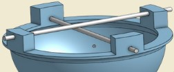Nous avons également ajouté un système de vérification du passage de la graine pour s'assurer que celle-ci soit bien larguée.

>
Détection des cages d'un terrain de foot
XEn bref
2023
?
Résumé :
Inspiré de la RoboCup, ce projet visait à s'occuper d'une partie du traitement d'image nécessaire au robot pour circuler sur le terrain (repérage de la balle, limites du terrain, cages...). Notre groupe devait être capable de détecter les cages par analyse d'image.
Détails du projet
>
Problème
Le capteur d'image envoie successivement des photos du terrain selon la position du robot. En réalisant une analyse sur chacune des images successives, il fallait être capable de détecter si les buts étaient présents sur l'image et leur limitation.
Solutions
Nous avons superposé différentes méthodes d'analyse d'image afin de détecter les buts :
- Détection des bords du terrain.
Utilisation de la méthode UNet pour obtenir l'intérieur terrain, à l'aide de la couleur du gazon.
=>Soustraction d'une dilatation et d'une érosion de l'image obtenu pour avoir les bords du terrain.
- Détection des poteaux.
Détection de l'angle d'horizon et tracé des lignes verticales.

Application du masque créé dans l'étape précédente. Récupération des seules lignes verticales encore présentes après l'application du masque.
- Reconstruction des buts.
Création d'un rectangle symbolisant les buts. Rotation de l'image pour que les buts soient à la verticale.
- Analyse de nos résultats.
Pour avoir des métriques permettant de savoir si notre algorithme était bon, nous avons détecté à la main la surface des buts, appelée "Aire de référence".
Nous avons ensuite étudié le rapport de cette aire de référence avec l'aire détectée par notre algorithme.
Nous avons remarqué que notre méthode n'étaient pas très performante sur les images floues ou sur les images où les buts n'apparaissaient quasiment pas.
>
Persistance visuelle
XEn bref
2023

?
Résumé :
L'objectif de ce projet était de réussir à afficher des caractères avec un système rotatif lumineux grâce à la persistance visuelle.
Détails du projet
>
Problème
=> pas d'hébergement => ancien nom de domaine indisponible
Volonté de visibilité pour l'association. Avoir un point commun où rediriger les gens pour les adhésions, les informations...
Solutions
Le projet s'est réalisé en plusieurs étapes :
- Achat d'un nouveau nom de domaine.
Recherches pour un nom de domaine qui contienne le nom de l'association, qui ne coûte pas cher à renouveler et dont le gestionnaire soit suffisamment flexible. Il a finalement été choisi etremontagnard.org
- Création d'une première version du site avec le lien d'adhésion.
Choix de réaliser une première version de la page d'accueil en HTML et CSS uniquement. Cela permettait d'avoir une première version rapidement, qui redirige les visiteurs vers les liens d'adhésion ou de don.

- Création d'une deuxième version avec la description de l'association.
Base visuelle sur le thème WordPress choisi pour le site final. Présence uniquement des pages statiques (sans ajout de contenu de la part des utilisateurs). Tout est encore en HTML/CSS.
- Création de la version finale avec toutes les fonctionnalités.
Recherche d'un autre moyen d'hébergement correspondant à la demande (flux de visiteurs, prix...) pouvant accepter des sites dynamiques.
Déploiement de la version WordPress, permettant au bureau d'ajouter des articles dans différentes catégories.

- Rédaction de tutoriel pour que les membres du bureau puissent être indépendants.
Mise en page d'un descriptif étape par étape, puis validation de son utilisation.
>
CookHub
XEn bref
2023
Développeuse | UX
Résumé :
L'objectif de ce projet était de combiner un site de recette classique avec la gestion de version de GitHub.
Détails du projet
>
Problème
Ce projet avait pour but de nous faire faire du code, peut importe le sujet ou la technologie. Nous avions quartier libre.
Je voulais améliorer mes compétences en JavaScript et découvrir plus en profondeur ce langage. Après plusieurs recherches j'ai opté pour React.
Concernant le sujet, j'ai imaginé un site de recette où chaque personne peut ajouter des versions, un peu comme une prise de note sur la recette que l'on partage.
Solutions
Ce projet s'est réalisé en deux grandes phases : le maquettage et le code.
- Phase de maquettage
Cette phase, qui m'a été conseillée par mon tuteur de projet, s'est révélée très utile. Elle m'a permis de déterminer à quoi ressemblerait chacune de mes pages, mais aussi comment passer de l'une à l'autre et de ne pas en oublier.
J'ai tout d'abord fait des maquettes papier, pour chacune des pages. Ensuite, j'ai utilisé Figma pour la page d'accueil uniquement, afin de choisir les couleurs et vérifier leur visualisation.
=> - Phase de code
- Base de données
J'ai fait le choix d'utiliser MySQL car c'est un outil que je maîtrisais déjà. Cela m'a permis de passer plus de temps à découvrir et me former sur React.
- Front-end
J'ai ensuite codé la partie front-end avec React, en utilisant les components, spécificité de React.
- Base de données
>
Conception Centrée Utilisateur (CCU)
XEn bref
2022 - 2023
Résumé :
Ce projet s'est décomposé en 3 phases : étude du besoin, maquettage et tests utilisateurs. L'objectif était de réaliser la démarche de conception centrée utilisateur sur des sujets concrets et imposés.
Détails du projet
>
Avec 6 projets différents pour l'ensemble de la classe au départ, chaque groupe s'est vu assigné un sujet. A chaque phase, les sujets tournaient et nous devions reprendre ce qui avait été fait par les groupes précédents.
- Phase d'étude du besoin
Problème
L’objectif de ce projet est de créer une technologie qui limitera les risques physiques et psychosociaux liés au télétravail. Le public visé peut être des adeptes du télétravail ainsi que des coworkers ou des travailleurs soucieux du présentiel.
Contrainte : Le dispositif doit inclure une application sur smartphone. Le bureau est présent chez le particulier ou en espace de coworking.
Solutions
Nous avons choisi de procéder à une phase exploratoire du monde du télétravail. Pour cela nous avons utilisé deux techniques d’enquêtes issues des méthodes de CCU : l’observation et le focus group.
Pour l'observation, nous avons utilisé la technique du shadowing afin de suivre au plus près l'utilisateur. Nous avons pu observer 4 personnes faisant régulièrement du télétravail, âgées de 27 à 60 ans et ayant des métiers différents. Nous avons pu mettre en lumière les problématiques suivantes :
- Machine à café trop loin
- Nécessité de régler le bureau (siège, distance par rapport à l’écran)
- Démarrage du télétravail long et répétitif (allumer l’ordinateur, les applications utiles, …)
- Mauvais environnement de travail
- Manque d’activité physique
Pour le focus group, nous avons pu accuillir 8 personnes avec qui nous avons pu approfondir les thématiques que nous avions relevé lors des observations. Les participants étaient des élèves, doctorants et professeurs de l'ENSC. Nous avons pu conclure que la solution devrait :
- Permettre d’améliorer le matériel utilisé en télétravail
- Ne pas nuir à l’autonomie en proposant des fonctionnalités optionnelles
- Créer un meilleur confort
- Limiter la solitude
- Permettre une meilleur organisation, un meilleur cadre de travail
Nous avons fini par une phase d'idéation afin de faire élerger différentes solutions possibles. Parmis les quatre retenues, nous avons sélectionné Le bureau intelligent pour particulier pour la suite du projet.
Après avoir créer des personnas et des scenaris en adéquations avec nos solutions, nous avons rédigé un Cahier de spécifications de la solution retenue.
- Phase de maquettage
Problème
L'objectif de ce sujet est la création d'une technologie qui a pour but d’aider les particuliers à réduire leur consommation de vêtements. Le public visé sera aussi bien des consommateurs de textile compulsifs que ceux n’ayant aucun intérêt pour ce milieu.
Contrainte : nous devions récupérer le cahier de spécifications écrit par le groupe ayant réalisé la phase d'analyse pour le maquettage.
Solutions
Avant de maquetter, nous avons du determiner quels étaient les points qui pouvaient poser problème ou les fonctionnalités importantes à tester. Ainsi, le maquettage serait axé sur les tests à réaliser par la suite :
- fonctionnalité de tri des vêtements
- fonctionnalité de proposition d'une tenue
Afin de savoir comment organiser les informations sur l'application et comment regrouper les thématiques, nous avons réalisé un tri de carte en ligne. Cela nous a permis d'identifier 3 catégories : Dresing, Tenue et Profil.
- Tests utilisateurs
Problème
L'objectif de ce sujet est la création d'une technologie permettant d'effectuer les "derniers kilomètres", en prenant en compte les personnes en situation de handicap.
Contrainte : nous devions récupérer la maquette réalisée par le groupe précédent.
Solutions
Pour réaliser les tests, nous avons commencé par choisir notre public cible, puis par lister les tâches que nous souhaitions évaluer.
Nous avons ensuite élaborer un protocole de test, avec les différentes tâches à réaliser. De notre côté, nous avions définit quels points observer lors des tests : nombre de clics sur certains boutons spécifiques, réussite ou non des étapes clefs, temps mis à les réaliser, aide apportée, verbatims...
Une fois les tests fini, nous posions quelques questions définies à l'avance aux participants.
Nous avons finalement analyser ces tests afin d'en tirer des recommandations et des améliorations.
>
Associations étudiantes
XEn bref
2022-2023
Développeuse
Lien du repository de génie logiciel
Lien du repository de développement mobile
Résumé :
Ce projet a commencé par une partie de génie logiciel avec la construction d'une API sur le sujet que l'on souhaitait. La suite du projet s'est faite sur le développement d'une application mobile utilisant l'API précédemment créée.
Détails du projet
>
Problème
Le sujet choisi était la possibilité de regrouper les associations étudiantes de notre école dans une application. Ainsi, il fallait que des membres, des évènements organisés puissent être ajoutés ou supprimés.
Solutions
Ce projet était donc deux projets liés :
- La partie génie logiciel
Il a tout d'abord fallu réfléchir à la structure de notre de base de données, aux classes existantes et leur liens.
Nous avons ensuite créé l'API, en utilisant le framework ASP.NET Core et la structure MVC (Model View Controller).
- La partie développement mobile
Nous avons créé l'interface correspondante. La plus grande difficulté que nous avons eu fut de réaliser une page d'accueil ou la barre de navigation n'apparaissait pas.
>
Pseason
XEn bref
2021
Résumé :
L'objectif était de réaliser des vidéos à but éducatif autour des différents troubles cognitifs.
Détails du projet
>
Problème
Dans le cadre d'un projet inter-promotion, nous avons eu l'idée de sensibiliser aux troubles cognitifs à travers des vidéos. Notre idée initiale était de faire plusieurs vidéos animées d'une dizaine de minutes maximum, comme une mini-série où chaque épisode aborde un trouble.
Solutions
Pour réaliser ce projet nous avons dû définir la structure des vidéos, pour donner une direction et une cohésion aux épisodes.
- Choix du premier trouble
Pour cela nous avons listé les différents troubles existants, et pour chacun nous avons établit des critères de sélection :
- La facilité à trouver des informations sur ce trouble ;
- La quantité de potentielles personnes que nous pouvions interviewer autour de ce trouble ;
- La complexité à expliquer le trouble.
Nous avons finalement opté pour le Trouble du Déficit de l'Attention avec ou sans Hyperactivité (TDAH).
- Recherches et interviews
Nous avons effectué des recherches afin de comprendre ce trouble et de pouvoir l'expliquer.
En parallèle, nous avons contacté différentes personnes pouvant être impactées par ce trouble : psychologues ayant travaillé avec des TDAH, famille, personnes atteintes du trouble... Nous avons pu interviewer certaines d'entre elles, ce qui nous a permis à la fois de mieux comprendre, mais aussi d'avoir des témoignages, qui nous semblaient importants pour que les gens puissent s'identifier plus facilement au travers de notre vidéo.
- Montage vidéo
Finalement, nous avons découpé la vidéo en 3 parties :
- Description du trouble
Dans cette partie nous expliquons en quoi consiste le trouble, comment il se manifeste et comment il peut être diagnostiqué. Nous avons réalisé cela avec AfterEffect afin d'animer notre présentation.
- Témoignages
Cette partie est une compilation des différents interviews, où l'on peut voir l'évolution de chaque personne entre le moment où le TDAH est soupçonné, jusqu'aux solutions trouvées pour vivre avec, en passant par le diagnostique et la prise en charge.
- Solutions possibles
Finalement, nous avons décidé de finir notre vidéo avec des solutions potentielles pour les personnes atteintes de TDAH. Il nous semblait important de véhiculer un message d'espoir, mais aussi de montrer qu'il existe des solutions que ce soit pour les proches ou les personnes atteintes du TDAH.
- Description du trouble
>
Réalité augmentée
XEn bref
2022
Développeuse
Résumé :
A partir d'une vidéo d'une feuille A4 qui bouge, réussir à afficher une pyramide en 3D stable qui bouge avec la feuille.
Détails du projet
>
Problème
L'objectif était de changer le contenu d’une vidéo en y incrustant une image en utilisant le logiciel Matlab. La vidéo initiale présentait une feuille bleue sur laquelle étaient disposés deux légos, le tout mis en mouvement par une main. Notre but était de remplacer cette feuille par une image que nous avions choisie au préalable, puis d’ajouter un élément 3D suivant les mouvements de la feuille.
Solutions
Le projet s'est décomposé en trois groupes :
- Récupération des coins de la feuille
Mise en évidence des formes et contour de l'image pour détecter les coins de la feuille à l'aide de la luminance.
Utilisation de l'approche de Canny pour estimer les gradients de l'image et détecter les contours.
Prédicition linéaire pour le suivi de la trajectoire.
- Incrustation de l'image
Les points récoltés par le premier groupe sont utilisés pour une transformation homographique.
Cette transformation modifie linéairement le contenu de l’image à incruster en adaptant celui-ci au format de la vidéo.
Une fois l'image incrustée il a fallu détecter la main afin de la faire appapraître. Une utilisation des différentes couleurs a permis d'avoir un contraste maximum et ainsi de détecter quels pixels dans la feuille appartiennent à la main.
- Ajout de la forme 3D
Utilisation d'une autre homographie de la 2D vers la 3D afin de faire correspondre les points de l'image transmis par le premier binôme à un repère 3D.
Puis il a fallu colorer les bons pixels pour reproduire la forme 3D souhaitée.
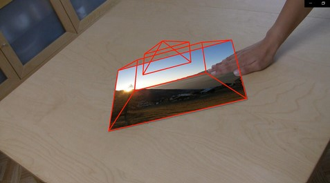
>
UStory
XEn bref
2022
Développeuse
Résumé :
Rédation d’un site web contenant des histoires interactives. Cette idée se base sur le concept des Livres dont vous êtes le héros ou des séries interactives telles que Black Mirror : Bandersnatch. L’enjeu est donc de pouvoir lire une histoire tout en ayant des choix qui influencent la suite de celle-ci.
Détails du projet
>
Problème
L’utilisateur doit donc pouvoir choisir une histoire à lire, mais également pouvoir l’arrêter et reprendre là où il en était. De plus, lorsqu’une histoire est finie, la site doit récapituler les choix de l’utilisateur et les lui montrer. Certains utilisateurs doivent aussi avoir la possibilité d’écrire eux-mêmes des histoires et de les publier sur les sites : ce sont les administrateurs.
Puisque nous étions un groupe de trois au lieu de deux, nous devions ajouter une plus value à notre projet. Nous avons choisi d'utiliser la structure MVC.
Solutions
Ce projet s'est déroulé en plusieurs phases :
- Structure de la base de données
Nous avons du réflechir à la structure de notre base de données, aux différentes tables que nous allions créer et leurs liens.
La difficulté principale résidait dans le fait de devoir enregistrer les choix effectués par un lecteur dans l'histoire.
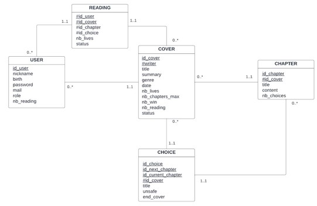 - Code front-end et back-end
Pour la partie back-end, nous avons codé en PHP.
Pour le front-end, nous avons veillé à ce que le site soit responsive, mais aussi à ce qu'il respecte les bases de l'accessibilité.
Nous avons par exemple favorisé les contrastes aux couleurs différentes pour les boutons, afin que les daltoniens ne soient pas pénalisés.
>
Jeux de gestion de colonie
XEn bref
2022
Développeuse
Résumé :
Création d’un jeu de gestion de colonie à l’aide de la programmation orientée objet en C#.
Détails du projet
>
Problème
L’enjeu de survie de la colonie passe notamment par la survie des colons eux-mêmes, ce qui nécessite la création de classes ainsi que leur imbrication. En effet, le joueur agit sur sa colonie, mais les colons doivent également être capables d’évoluer à chaque tour à l’aide de comportements par défaut.
Solutions
Nous avons choisi le thème d'Alice au pays des merveilles.
Chaque personnage avait son propre comportement et sa manière de circuler sur la carte.
Le jeu se déroulait entièrement à travers la console.
Le jeu se déroulait à travers des choix à chaque tours.
>
Île aux fractions
XEn bref
2021-2022
?
Résumé :
Réalissation un jeu sérieux sur smartphone, nommé l’île aux Fractions, afin d’aider les enfants dyscalculiques dans l’apprentissage des fractions.
Détails du projet
>
Problème
L’application a pour but d’aider les professeurs à aiguiller les élèves et identifier leurs difficultés pour personnaliser leur apprentissage, être plus attentif à leurs besoins. Enfin, les données récoltées grâce à l’application, stockées dans une base de données, pourront servir à des chercheurs pour de futures recherches sur la dyscalculie.
Ce projet fait suite à un travail commencé l’année dernière, qui a permis la création du jeu sérieux et son test sur une classe d’enfants non dyscalculiques. Les résultats sont encourageants, c’est pourquoi la cliente a formulé une nouvelle demande concernant le développement de cette application.
Les objectifs étaient les suivants :
- Correction des bugs détectés - Améliorer l'UX de l'application - Mesurer le changement émotionnel de l'enfant pendant l'utilisation - Récolter l'avis des parents et professeurs sur l'utilisabilité du jeu
Solutions
Le projet s'est réalisé en deux phases, durant un semestre chacune :
- Première phase
Le groupe s'est divisé en deux parties : une qui s'occupait de l'application et l'autre qui a fait les autour de l'état émotionnel de l'utilisateur.
- Application
Pour l'application, nous avons pris en main le code existant, puis nous avons corrigé les bugs détectés.
Finalement, nous avons implémenté de nouvelles fonctionnalités, comme certains boutons retour manquants ou encore plus de détails sur le jeu (nombre de clics par minute...).
- Etat émotionnel
Nous avons étudiés les différents moyens pouvant permettre de détecter le changement d'état émotionnel (caméra, micro, mouvements de l'appareil...).
Devant des problèmes de fiabilités de ces variables, nous avons fait le choix de ne récolter que ce qui est détecté sur l'application directement (nombre de clics, retours en arrière, nombre d'essais...)
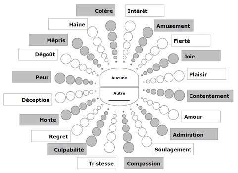
Nous avons alors rédigé un protocole expérimental basé sur cette première phase.
- Application
- Deuxième phase
Lors de cette deuxième phase, nous avons pu réaliser les expériences avec une classe de CM2.
Nous avons ensuite analysé les résultats récoltés, grâce à des méthodes de statistiques. Nous avons finalement conclu que l'on ne pouvait pas corréler les données récoltées et l'état émotionnel de l'élève.
>
Pas l'temps d'biaiser
XEn bref
2021
Résumé :
L'objectif était de créer un jeu de société basé sur les biais cognitifs.
Détails du projet
>
Problème
Dans le cadre d'un projet inter-promotion, les deuxièmes années ont choisi de créer un jeu de société basé sur les biais cognitifs.
Solutions
Le projet s'est développé autour de deux grandes thématiques : le processus création de jeux de société et les biais cognitifs.
- Etat de l'art et prospection
La première partie concernait l'état de l'art :
- Le premier consistait à lister les différents biais cognitifs, leur contexte d'apparition et de sélectionner ceux qui nous semblaient les plus faciles et amusants à utiliser.
- Le deuxième visait à connaître les jeux existants exploitant les biais cognitifs. Puisqu'il y en avait vraiment très peu, nous avons également listé les jeux d'ambiances connus, ainsi que leur dynamique de jeu pour essayer de mieux comprendre comment faire.
La deuxième partie, qui s'est déroulé en parallèle, a été de prendre contact avec des personnes dans le monde des jeux de société : créateur, éditeur, propriétaire de bar à jeu... Nous avons également préparé des questions pour les interviews de ces personnnes.
- Entretiens semi-directifs
Nous avons ensuite réaliser des entretiens semi-directifs en binôme : un deuxième année qui dirigeait l'entretien, et un première année qui prenait des notes.
- Création du jeu
Cette étape s'est décomposée en plusieurs itérations de brainstorming où chacun proposait des idées, celles qui convenaient à tout le monde étaient intégrées au jeu, puis testées par nos familles ou nos amis.
Une fois d'accord sur les différentes règles et sur la dynamique, nous avons créé le design final des cartes ainsi qu'écrit les règles de jeu.
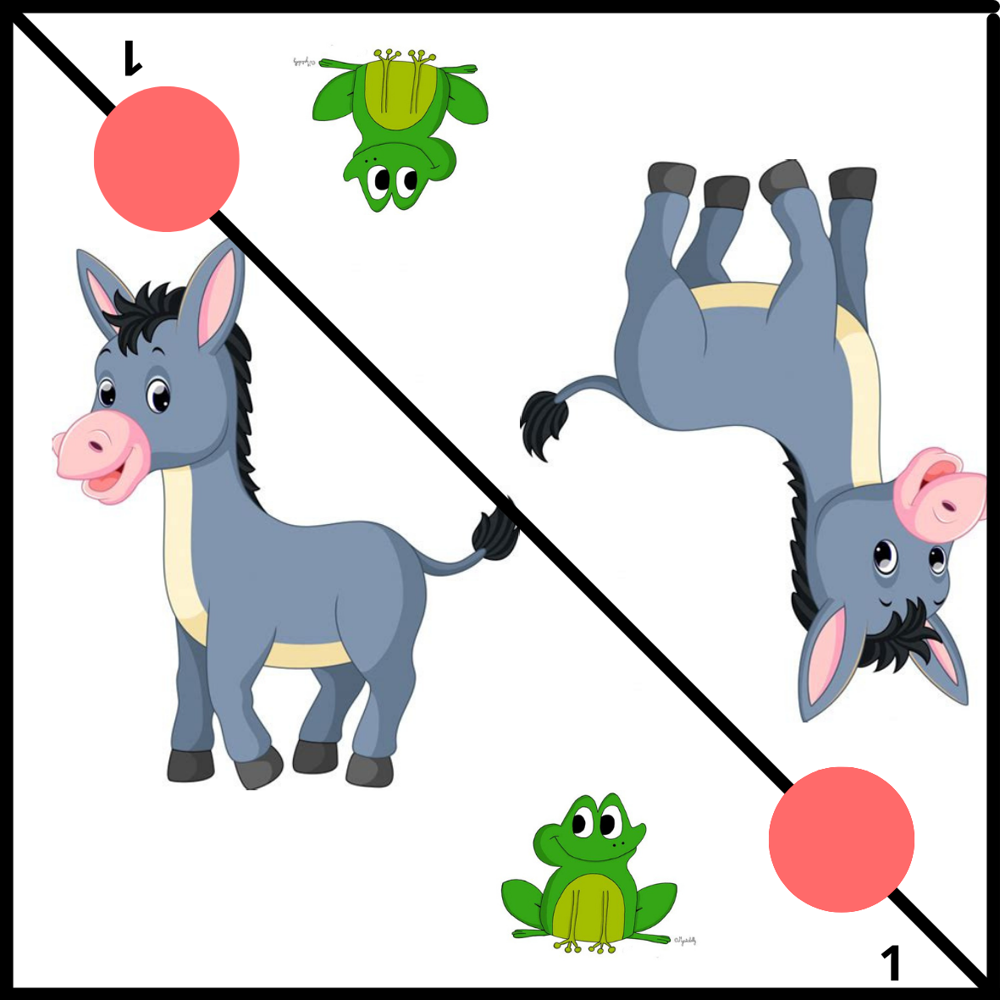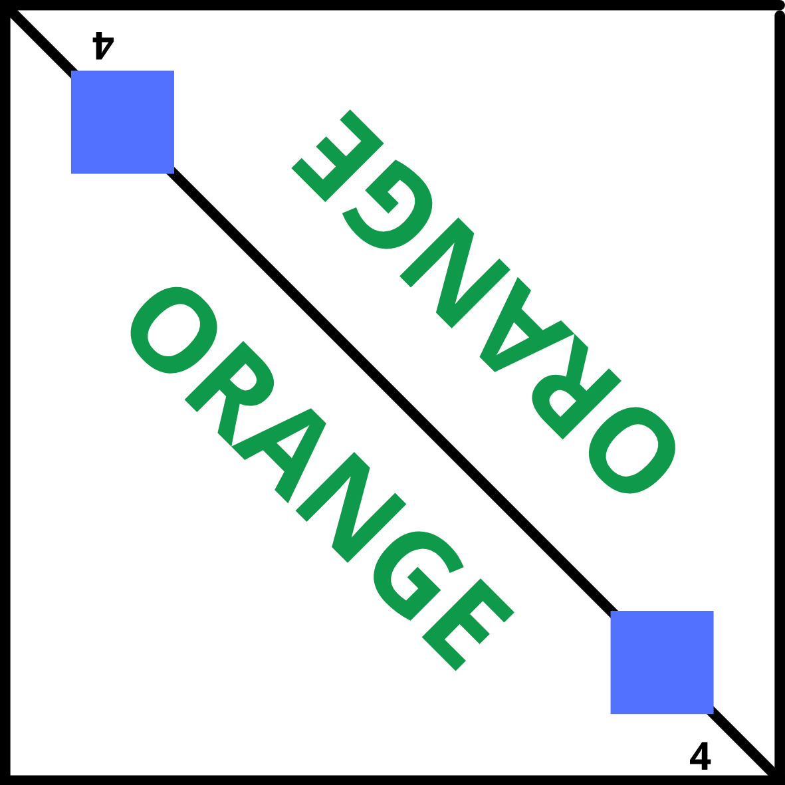 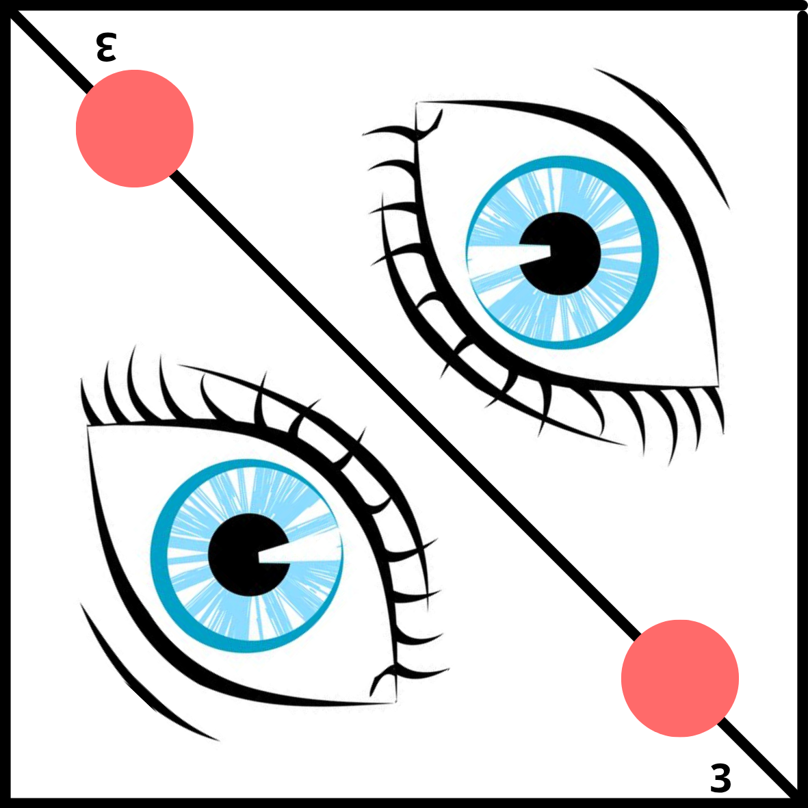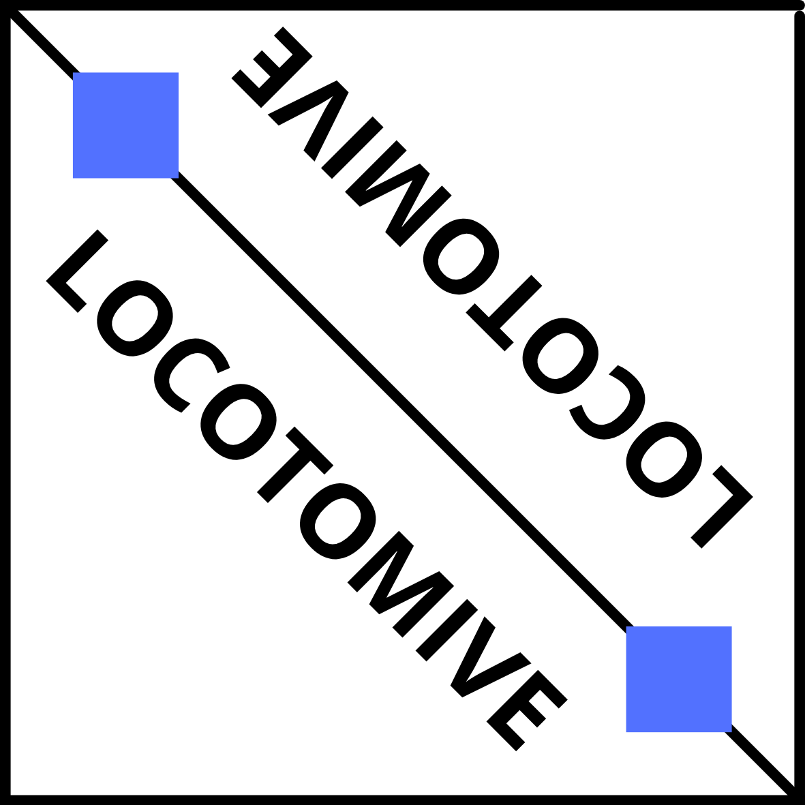
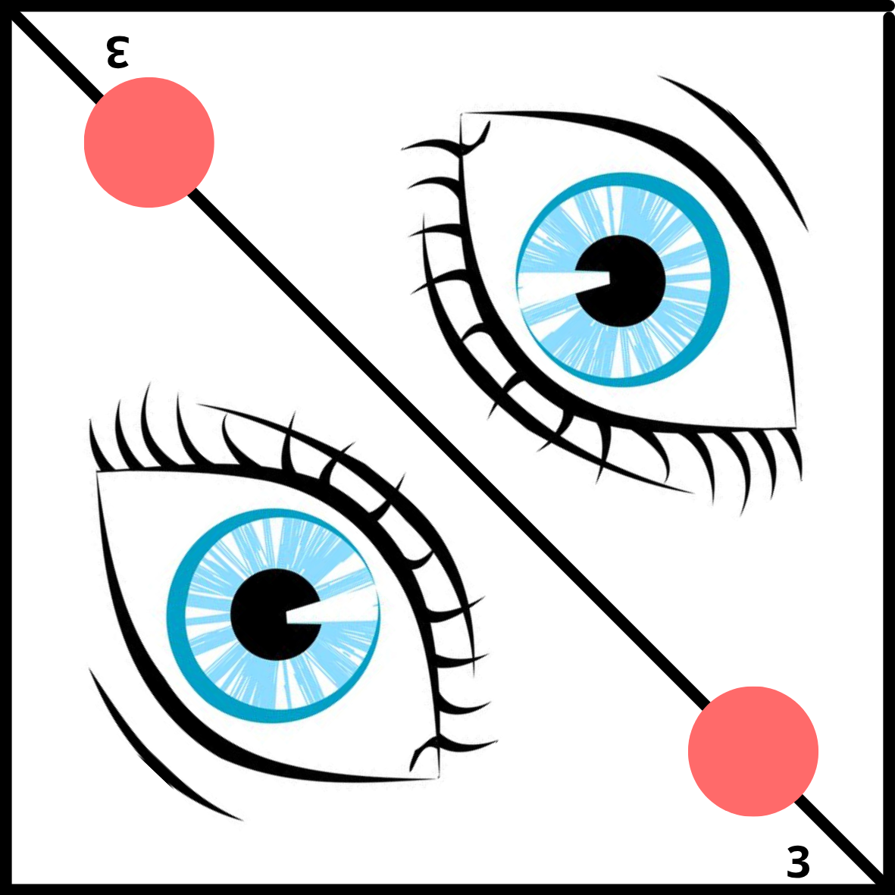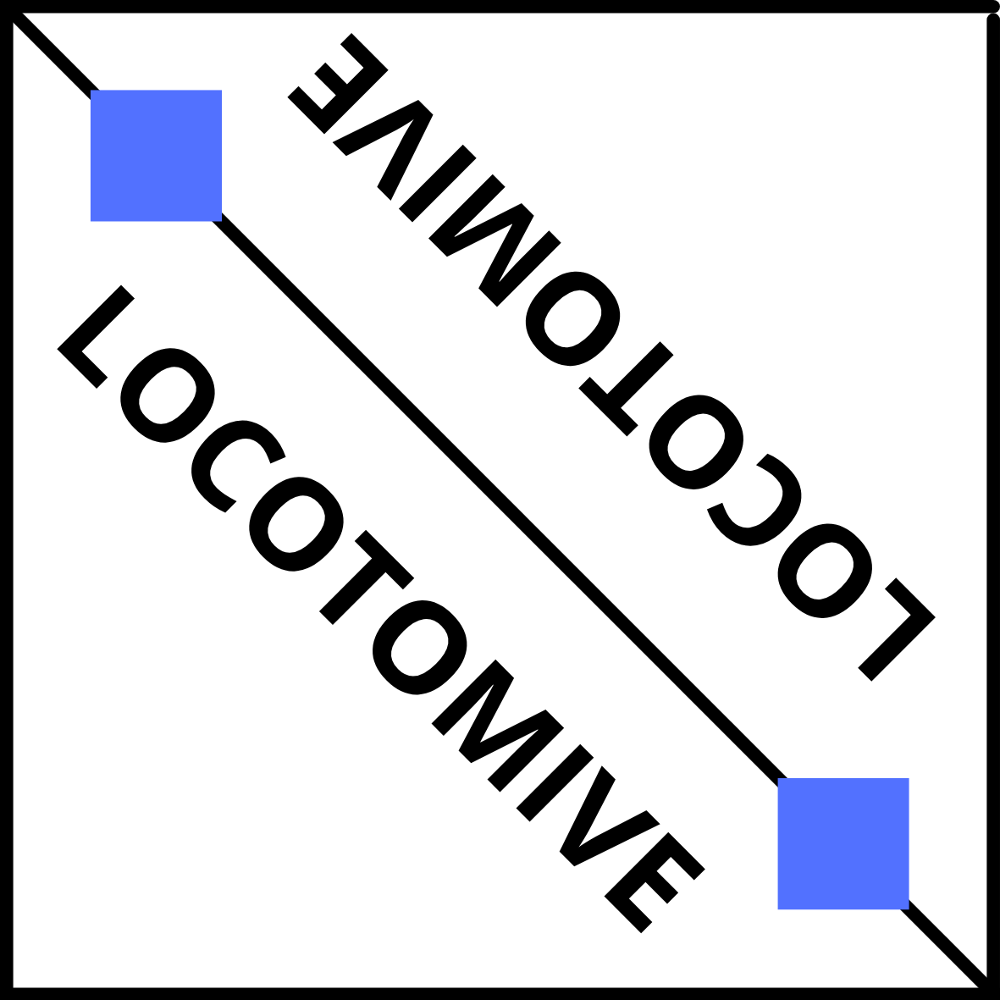
>
Chasse au trésor
XEn bref
2021
Développeuse
Résumé :
L'objectif était de faire une application console ressemblant au démineur, avec des trésor à aller chercher en plus.
Détails du projet
>
Problème
Reposant sur le concept du démineur où le joueur découvre une carte petit à petit, l'objectif ici est de trouver les différents trésors sans tomber sur une bombe.
Solutions
Nous avons écrit plusieurs fonctions permettant au joueur de visualiser la carte et choisir la case qu'il souhaite découvrir.
Nous avons aussi du gérer l'affichage dans la console et calculer les résultats de chaque actions.
>
Immersion en Conception Centrée Utilisateur
XEn bref
2021
Résumé :
L'objectif était de découvrir et apprendre à réaliser les quatre principales méthodes de Conception Centrée Utilisateur (CCU).
Détails du projet
>
Problème
Sujet : L'objectif final était la refonte du site AlloCiné. Pour cela, il fallait effectuer une enquête auprès des utilisateurs dans le but de comprendre leurs besoins et leurs usages afin de prroduire une meilleure version de l'interface.
Solutions
Nous avons préparer les quatres principales méthodes de Conception Centrée Utilisateur :
- Questionnaire
- Entretien semi-directif
- Focus group
- Observation
Puis, chaque groupe devait concrètement réaliser 2 de ces méthodes et en faire l'analyse. Nous avons du faire des entretiens semi-directifs et des observations.
Mastermind
XEn bref
2021
Développeuse
Résumé :
L'objectif était de reproduire le jeu du mastermind où le gestionnaire des couleurs secrètes est un ordinateur. Par la suite, le projet demandait aussi de créer un ordinateur capable de tricher sans être détectable.
Détails du projet
>
Problème
L'ancien site n'était plus actif et il n'y avait pas de moyen de communiquer sur les activités de l'association.
Solutions
Le projet était donc composé de deux phases :
- Création de l'algorithme capable de jouer
Pour cela il a fallu analyser comment se déroulait une partie de mastermind et implémenter les règles une à une.
- Création de l'algorithme capable de tricher
Il a fallu déterminer comment tricher sans que ce soit visible par l'autre joueur. Cela revenait à changer les couleurs en fonction des réponses données.
>
Site web de Être Montagnard
XEn bref
2025
Développeuse
Lien du site : www.etremontagnard.org
Résumé :
Le premier site de l'association n'étant plus actif, l'objectif de ce projet était de repartir de 0 pour faire un nouveau site. Celui-ci devait permettre aux membres du bureau de poster régulièrement des articles ainsi qu'aux membres et personnes externes de se renseigner sur l'association et d'adhérer.
Détails du projet
>
Problème
L'ancien site n'était plus actif et il n'y avait pas de moyen de communiquer sur les activités de l'association.
=> pas d'hébergement => ancien nom de domaine indisponible
Volonté de visibilité pour l'association. Avoir un point commun où rediriger les gens pour les adhésions, les informations...
Solutions
Le projet s'est réalisé en plusieurs étapes :
- Achat d'un nouveau nom de domaine.
Recherches pour un nom de domaine qui contienne le nom de l'association, qui ne coûte pas cher à renouveler et dont le gestionnaire soit suffisamment flexible. Il a finalement été choisi etremontagnard.org
- Création d'une première version du site avec le lien d'adhésion.
Choix de réaliser une première version de la page d'accueil en HTML et CSS uniquement. Cela permettait d'avoir une première version rapidement, qui redirige les visiteurs vers les liens d'adhésion ou de don.
- Création d'une deuxième version avec la description de l'association.
Base visuelle sur le thème WordPress choisi pour le site final. Présence uniquement des pages statiques (sans ajout de contenu de la part des utilisateurs). Tout est encore en HTML/CSS.
- Création de la version finale avec toutes les fonctionnalités.
Recherche d'un autre moyen d'hébergement correspondant à la demande (flux de visiteurs, prix...) pouvant accepter des sites dynamiques.
Déploiement de la version WordPress, permettant au bureau d'ajouter des articles dans différentes catégories.
- Rédaction de tutoriel pour que les membres du bureau puissent être indépendants.
Mise en page d'un descriptif étape par étape, puis validation de son utilisation.
>
Hack1Robo
XEn bref
2023
Développeuse
Résumé :
Participation au hackaton Hack1Robo, autour des thèmes de l'IA, la robotique et les sciences cognitives. Participation à un projet avec un système d'apprentissage pour le déplacement autonome d'un robot.
Détails du projet
>
Problème
Un petit robot roulant, équipé de détecteurs de proximité, devait être capable de réaliser un parcours en 8 de façon autonome, après avoir appris le trajet grâce à un réseau de neurones.
Solutions
- Connexion des robots à l'ordinateur
La première mission fut de connecter les petits robots à nos ordinateurs afin de récupérer les données des capteurs.
- Enregistrement des données
Une fois qu'on a eu accès aux données des capteurs, nous avons enregistré ces dernières pendant que nous guidions le robot à travers le parcours. Pour cela, nous avons utilisé des cartons afin de bloquer l'accès au robot à certain moment, pour s'assurer qu'il effectue le bon parcours.
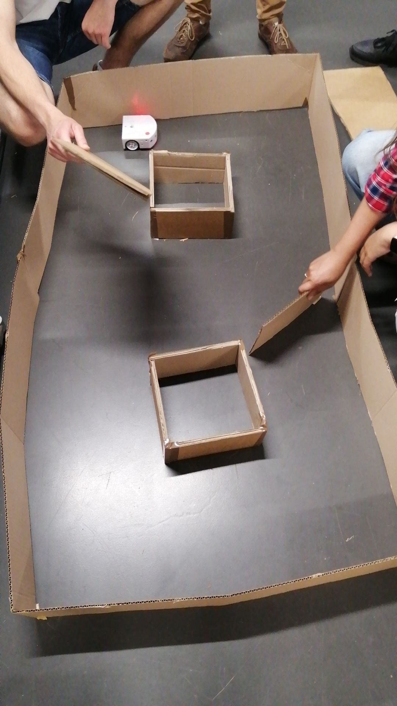 - Entrainement du modèle d'apprentissage
Nous avons ensuite entrainé un modèle d'apprentissage avec les données de ces capteurs, puis nous avons transmis le résultat de cet apprentissage au robot.
- Déplacement autonome du robot
Pour finir, le robot se servait de l'apprentissage pour se dirigier dans le circuit sans utiliser ses capteurs.
>